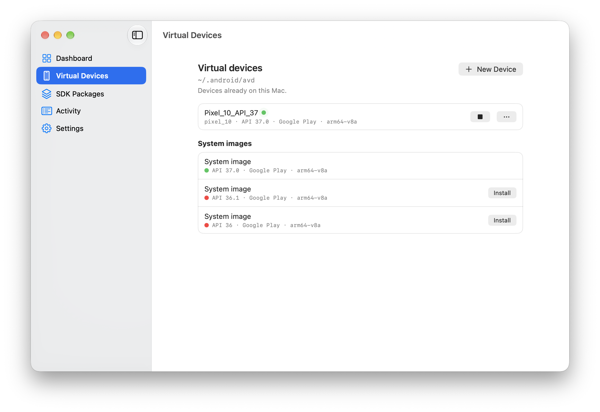
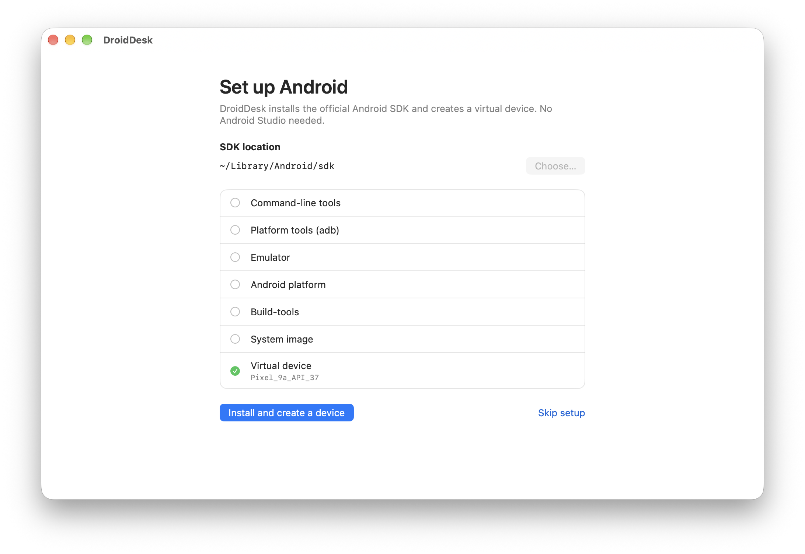
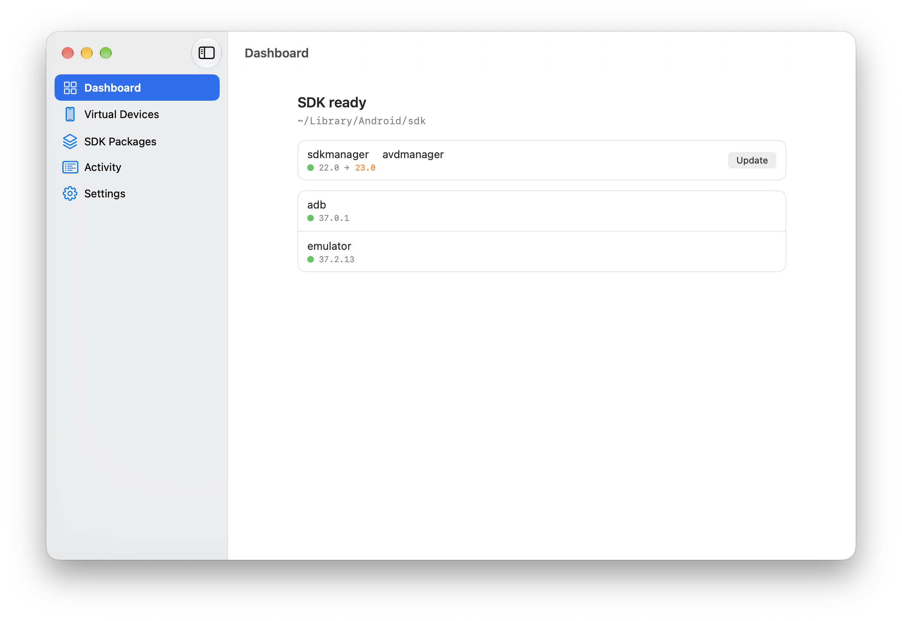
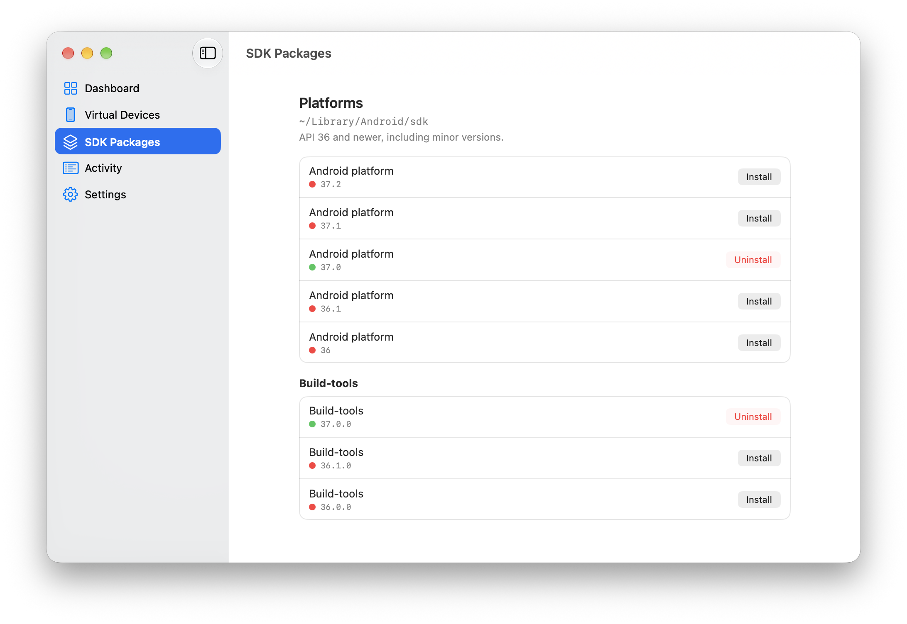
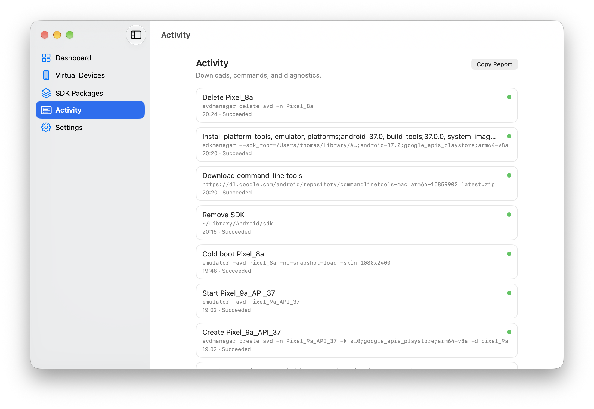
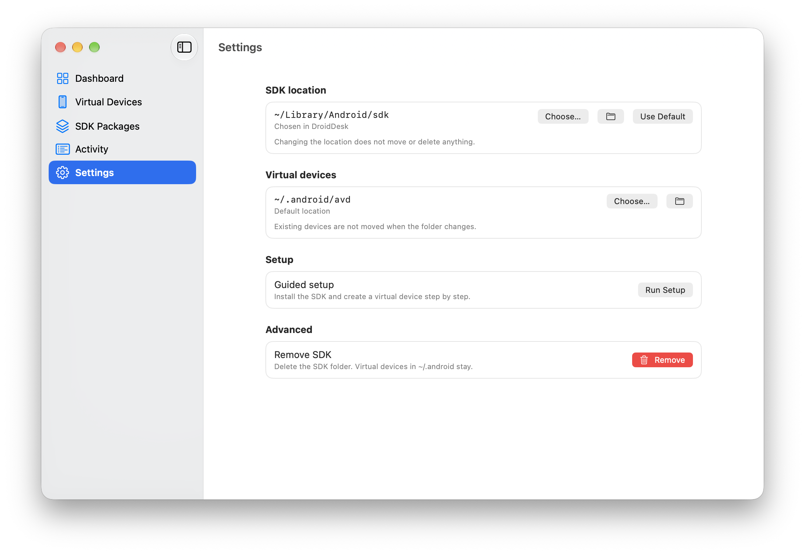

Android emulators on your Mac, without Android Studio.
DroidDesk installs the official Android SDK and runs virtual devices from one small app.
Download for MacFree and open source · Made for Apple Silicon · macOS 26 or later

What it does
Set up in minutes
A guided setup installs the SDK, a system image, and a virtual device. You read and accept the Android licenses yourself.
The official tools
DroidDesk runs Google’s own sdkmanager, avdmanager, emulator, and adb. The SDK it leaves is a standard one that Expo, React Native, Flutter, and Gradle already understand.
Control your devices
Start, stop, cold boot, wipe, or delete a virtual device. A device shows Ready only once Android has finished booting.
See every command
Every install and emulator command is listed with its output, and one click copies a diagnostic report.
Install
- Download the DMG from the latest release.
- Open it and drag DroidDesk to Applications.
- Open DroidDesk. macOS says it cannot verify the developer, because DroidDesk is not notarized yet. Open System Settings → Privacy & Security and click Open Anyway.
You need about 5 GB of free space for the SDK and one system image, and an internet connection for the first setup.
Screens




